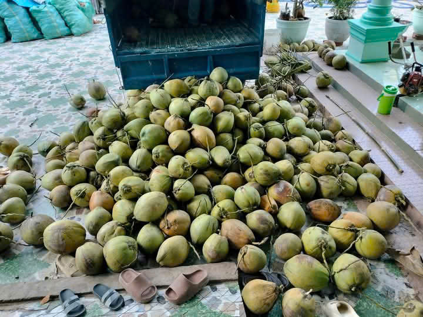
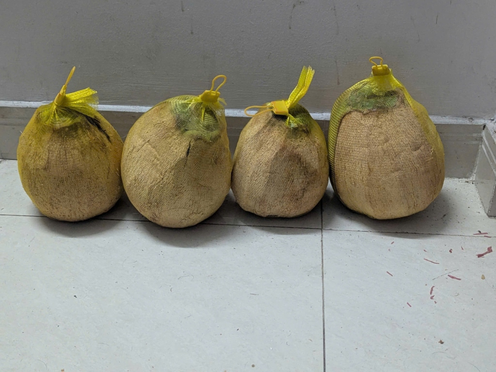

Dừa Sáp Cầu Kè Trà Vinh Chính Gốc: Câu Chuyện Đất Hòa Tân & Giá Trị Dinh Dưỡng Quý Giá
✍️ Tư liệu nhà vườn xã Hòa Tân, huyện Cầu Kè, tỉnh Trà Vinh • Thời gian đọc: 7 phút
- Hành trình cây dừa sáp bén rễ tại Cầu Kè từ thập niên 1960
- Bí mật thổ nhưỡng xã Hòa Tân: Vì sao nơi khác trồng không ngon bằng?
- Bảng thành phần dinh dưỡng & 4 công dụng vàng đối với sức khỏe
- Bà bầu, trẻ nhỏ và người lớn tuổi ăn dừa sáp như thế nào cho tốt?
- Gợi ý chọn Dừa Sáp Cầu Kè làm quà biếu sang trọng, ý nghĩa
1. Hành trình cây dừa sáp bén rễ tại Cầu Kè từ thập niên 1960
Ít ai biết rằng, lịch sử của thức quà đệ nhất miền Tây — Dừa Sáp Cầu Kè — bắt đầu từ một chuyến hành hương cách đây hơn nửa thế kỷ. Vào những năm 1960, Hòa thượng Thạch Sô (Sư cả chùa Botumsakor tại huyện Cầu Kè, tỉnh Trà Vinh) trong một chuyến sang thăm quê hương lễ Phật tại Philippines (nơi gọi giống dừa đột biến này là Makapuno) đã mang những cây dừa giống đầu tiên về trồng thử nghiệm trong khuôn viên chùa và vùng đất xã Hòa Tân.
Kỳ lạ thay, khi bén rễ trên dải đất phù sa cổ ven sông Hậu thuộc huyện Cầu Kè, giống dừa này không những sinh trưởng xanh tốt mà còn cho ra lớp cơm sáp dày hơn, dẻo quánh hơn và thơm nồng mùi sữa tươi tự nhiên hơn hẳn nhiều vùng đất khác. Đến tháng 8/2012, Trung tâm Sách Kỷ lục Việt Nam chính thức xác lập Dừa sáp Cầu Kè nằm trong Top 50 đặc sản trái cây nổi tiếng nhất Việt Nam, và năm 2024 Cục Sở hữu trí tuệ đã cấp văn bằng bảo hộ Chỉ dẫn địa lý "Trà Vinh" cho sản phẩm dừa sáp.

2. Bí mật thổ nhưỡng xã Hòa Tân: Vì sao nơi khác trồng không ngon bằng?
Nhiều nhà vườn ở các tỉnh lân cận từng mua cây giống dừa sáp từ Cầu Kè về trồng, nhưng khi thu hoạch thì trái thường bị "sáp xốp bở", nước chua hoặc tỷ lệ kết sáp cực thấp. Các nhà khoa học nông nghiệp tại Đại học Trà Vinh và Đại học Cần Thơ đã chỉ ra 3 yếu tố tự nhiên độc bản của vùng Cầu Kè:
- Tầng đất giồng cát pha phù sa cổ: Xã Hòa Tân, Hòa Ân, An Phú Tân (huyện Cầu Kè) có cấu trúc đất thịt nhẹ pha cát giàu khoáng chất Kali, Magie và vi lượng tự nhiên, giúp quá trình chuyển hóa đường và axit béo trong lòng trái dừa diễn ra trọn vẹn, tạo nên độ dẻo quánh như bơ sáp.
- Tiểu khí hậu ven sông Hậu: Biên độ nhiệt ngày - đêm ổn định cùng độ ẩm không khí từ nhánh sông Hậu giúp buồng dừa tích lũy hàm lượng dầu béo lành mạnh mà không bị gắt dầu.
- Kỹ thuật canh tác hữu cơ truyền thống: Nhà vườn tại Vựa Dừa Sáp Cầu Kè tuyệt đối không dùng thuốc kích thích chín ép; mỗi buồng dừa đều được giữ đủ 11 - 11.5 tháng tuổi trên cây để lớp cơm sáp tự kết đặc từ ngoài vào trong.
3. Bảng thành phần dinh dưỡng & 4 công dụng vàng đối với sức khỏe
Không chỉ là món tráng miệng giải nhiệt thượng hạng, cơm dừa sáp Cầu Kè còn là một "kho dinh dưỡng tự nhiên" nhờ quá trình đột biến nội nhũ làm tăng hàm lượng axit béo chuỗi trung bình (MCT) và axit amin thiết yếu:
👉 (Trên điện thoại, bạn có thể vuốt ngang bảng bên dưới để xem đầy đủ)
| Thành phần dinh dưỡng (100g cơm sáp) | Hàm lượng ước tính | Lợi ích nổi bật với cơ thể |
|---|---|---|
| Axit Lauric (MCT tự nhiên) | 45% - 50% tổng axit béo | Kháng khuẩn, tăng cường miễn dịch tự nhiên (tương tự hoạt chất quý trong sữa mẹ) |
| Chất xơ hòa tan | 7.5g - 9.0g | Tạo độ dẻo sệt đặc trưng, nuôi dưỡng lợi khuẩn đường ruột, ngừa táo bón |
| Khoáng chất (Kali, Magie, Sắt, Kẽm) | ~ 350mg Kali / 100g | Bù điện giải nhanh chóng, tốt cho tim mạch, giảm chuột rút ở phụ nữ mang thai |
| Vitamin nhóm B & Vitamin E | Dồi dào | Làm sáng mịn làn da từ bên trong, chống oxy hóa và phục hồi thể lực |
4. Bà bầu, trẻ nhỏ và người lớn tuổi ăn dừa sáp như thế nào cho tốt?
🤰 Với mẹ bầu & sau sinh
Mẹ bầu từ tháng thứ 4 ăn 2 - 3 lần/tuần (mỗi lần 1 ly nhỏ dầm sữa tươi không đường hoặc trái cây) giúp bổ sung Axit Lauric, làm mát cơ thể và hỗ trợ sữa mẹ thơm đặc hơn.
👶 Với trẻ nhỏ biếng ăn
Cơm dừa sáp mềm mịn như phô mai tươi, xay sinh tố cùng bơ sáp hoặc chuối chín là nguồn năng lượng lành mạnh giúp bé tăng cân tự nhiên và tiêu hóa khỏe.
👵 Với ông bà, người lớn tuổi
Không cứng như dừa khô thường, lớp sáp trong lòng gáo mềm tan trong miệng. Chỉ cần xúc ăn trực tiếp hoặc trộn chút sữa hạt là món quà tẩm bổ tuyệt vời cho ông bà.
5. Gợi ý chọn Dừa Sáp Cầu Kè làm quà biếu sang trọng, ý nghĩa
Người miền Tây có câu: "Quý nhau lắm mới biếu nhau cặp dừa sáp Cầu Kè". Một cặp hoặc một thùng 4 trái Dừa Sáp Size Lớn VIP (1.3kg - 1.5kg) được gọt vỏ xơ láng mịn, bọc lưới vàng chỉn chu vừa mang đậm hồn quê mộc mạc, vừa là thức quà quý hiếm khiến bất cứ ai nhận được cũng trầm trồ.

